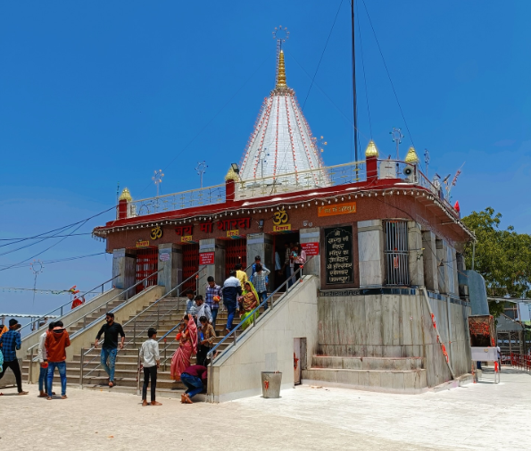
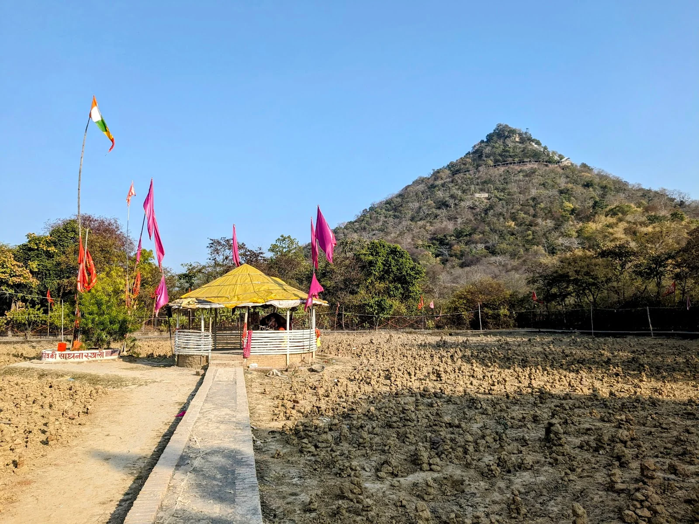
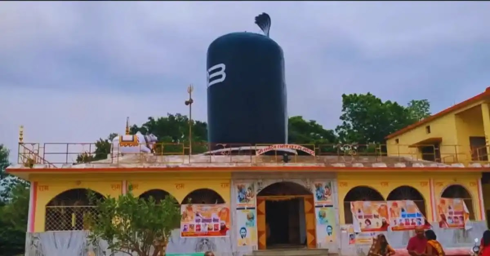
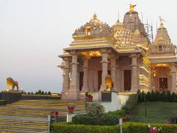
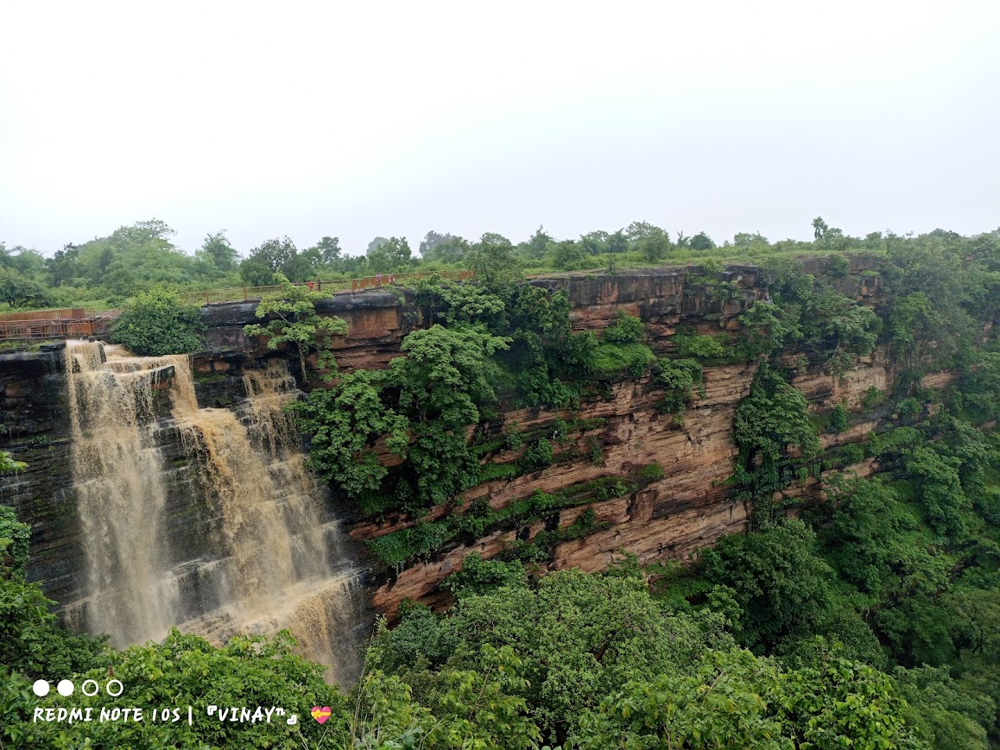
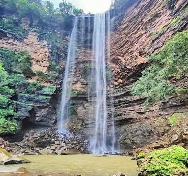
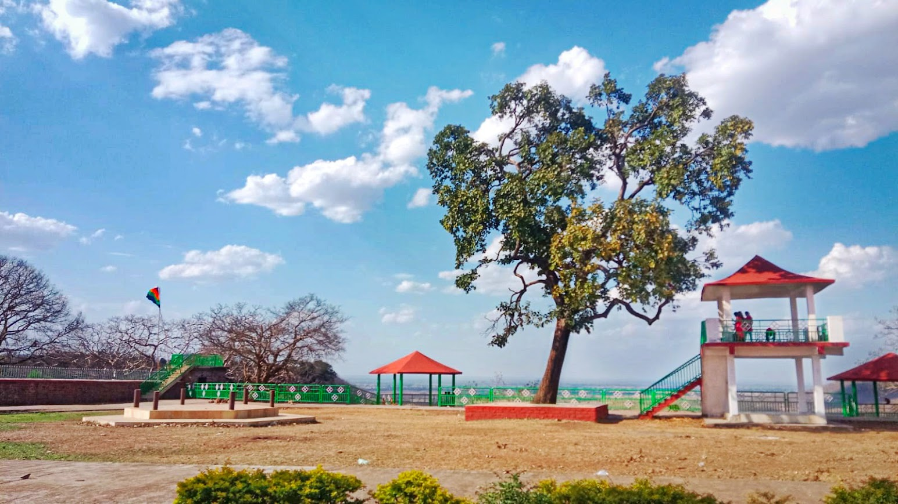

जय माँ शारदा
Maa Sharda ki divya kripa aur Maihar ki adhyatmik virasat ko ek premium digital experience ke saath explore karein. Yatra se judi har jaruri jankari uplabdh hai.
Sharda Mata Temple, Maihar, is one of the most revered pilgrimage sites in India, dedicated to Goddess Sharda, the deity of wisdom and knowledge. Located atop Trikuta Hill in Madhya Pradesh, the temple attracts thousands of devotees every year seeking blessings and spiritual peace.

A place of devotion, wisdom, and peacePerched on Trikuta Hill in Maihar, Madhya Pradesh, Maa Sharda Temple is a cherished destination for devotees seeking the blessings of the goddess of wisdom and knowledge.
Explore the temple, discover the heritage of Maihar, and plan a thoughtful visit with the information on this page.
Plan your visitDiscover Maihar's sacred temples and local landmarks, where faith, history, and natural beauty come together.
A renowned pilgrimage destination dedicated to Maa Sharda, located atop Trikuta Hill.

A popular spot to relax, enjoy nature, and capture beautiful memories.

Bada Akhada is a peaceful place of devotion and tradition.

KJS Temple is a beautiful temple known for its peaceful atmosphere and elegant architecture.

Rampur Ghati is a scenic destination known for its lush greenery and beautiful valley views.

Panni Khor is a peaceful natural spot known for its refreshing water and scenic surroundings.

Karmdeshwar Nath is an ancient and peaceful Shiva temple.
Discover the places, stories, and traditions that make Maihar special.
Take a closer look at Maihar's spiritual heritage, scenic beauty, and iconic landmarks. Select a photo to view it larger.
A few helpful reminders for planning a comfortable visit to Maihar.
Maihar is connected by rail and road. Check current local transport options and travel schedules before setting out for the temple.
View detailsTemple hours and visitor guidance can change. Follow on-site instructions, be mindful of other visitors, and check current darshan updates before your visit.
View detailsFor the latest temple timings, facilities, and visitor guidance, consult official local information before travelling.
View details